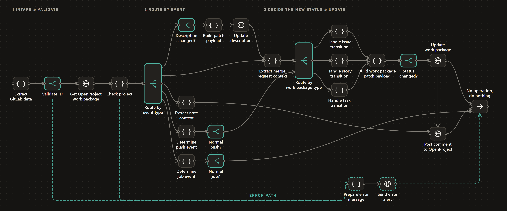
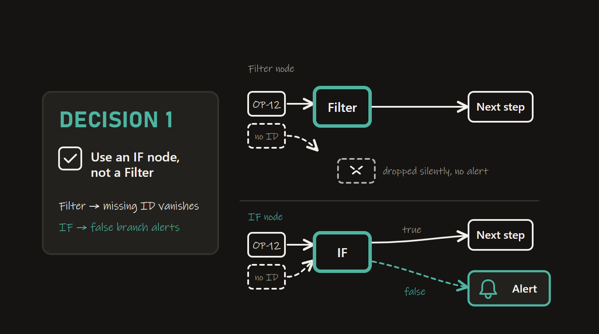
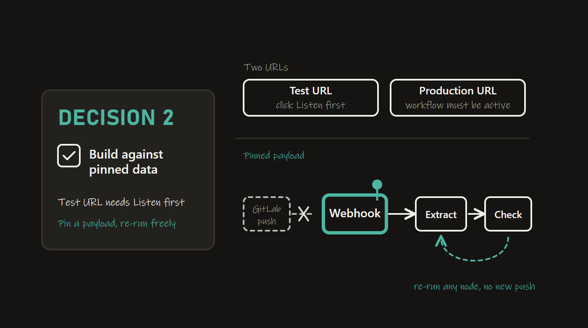
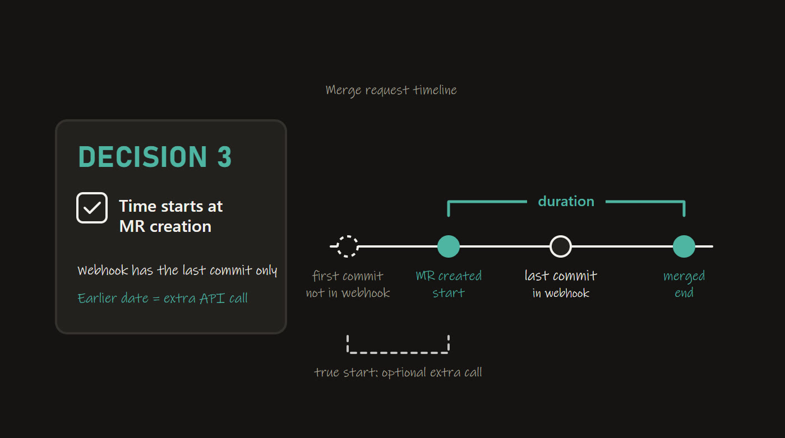
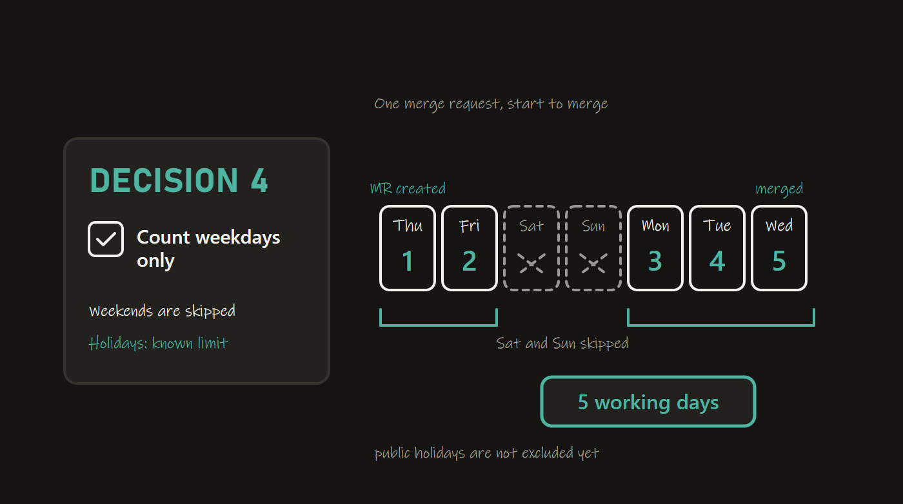

Case study
Keeping the tracker truthful without asking developers to remember.
An n8n workflow that reads the work package ID from GitLab activity and updates OpenProject automatically, so task status follows the code instead of someone’s memory.

The problem
Developers finished the work. The tracker never found out.
Developers write code in GitLab and track work in OpenProject. After pushing a branch or merging, they have to open OpenProject and update the work package by hand. In practice this step is often missed, especially mid-task, so the status shown in the tracker drifts away from reality.
The tracker also captures nothing about what changed in the code. Anyone reviewing progress had to open GitLab separately to find out, which defeats the point of having a single place to look.
The solution
Four decisions that make the automation safe to trust
The work package ID is the only link
A branch name, merge request title or commit message carries the ID (for example feature/OP-12345_short-description). One forgiving pattern finds it, so the convention is easy to follow.
Stop loudly when something is wrong
A missing ID or a project that has not opted in does not fail silently. The workflow routes to an error path that builds a readable message and alerts the team.
Only change what actually changes
Before updating, the workflow checks whether the new status differs from the current one. No change means no update and no noise in the activity stream.
Every update explains itself
Each status change is followed by a comment saying which event triggered it, so the history in OpenProject is readable without opening GitLab.
Background
A tracker that is sometimes wrong is a tracker nobody trusts
Two tools do different jobs. OpenProject holds the work packages (User Story, Task, Issue) and is meant to be the single source of truth for progress. GitLab is where the work happens: branches, commits and merge requests.
Because the link between them was a person remembering to update a status, the tracker was only as accurate as the least consistent developer. An automation layer was the missing piece, with n8n acting as the bridge between the two systems.
EVENT SOURCE
GitLab webhooks
AUTOMATION ENGINE
n8n
DESTINATION
OpenProject API v3
AUDIENCES
Developers, QA and project leads
Research
Decisions came from the payloads and the platform limits, not from guesses
Input came from reading real webhook payloads, the OpenProject and GitLab API behaviour, and the manual process the team already followed.
DECISION 1
Validating the ID needed an IF node, not a Filter node
A Filter drops non-matching items silently, so a missing ID would never reach the error path.
An IF node gives an explicit true and false output, so the false branch can raise an alert.

DECISION 2
Develop against test URLs and pinned data
The webhook test URL only listens after clicking Listen, and the production URL needs the workflow activated.
Pinning a captured payload on the previous node lets every later node be re-run without re-triggering GitLab.

DECISION 3
The merge request webhook limits what duration can mean
It carries only the last commit, not the first, so duration is measured from the merge request creation date.
A true first-commit date would need an extra GitLab API call, which was left as optional.

DECISION 4
Duration counts weekdays only
The team works a five-day week, so weekends are skipped.
Public holidays are not excluded yet. That is a known limit, not an oversight.

Define
How might we keep work package status accurate without relying on developers to update it?
DEVELOPERS
Focused on code. They want to follow a simple naming habit and have the tracker update itself.
QA, LEADS AND ADVISORS
Reading progress. They need the status to be current and the reason for each change visible.
These two groups come from knowing who works with the tracker, not from a formal study, so they are stated plainly rather than dressed up as personas.
Ideation
Each pain point turned into one mechanism
PAIN POINT
Status updates get forgotten
BECAME
Webhooks from GitLab trigger the update, so no one has to remember.
PAIN POINT
Automation that fails silently is worse than none
BECAME
An IF node on the ID, plus an error path that builds a message and alerts the team.
PAIN POINT
Tracker history says nothing about the code
BECAME
A comment on each status change naming the event and branch that triggered it.
Asking developers to be more disciplined does not scale. The reliable fix was to remove the step, so the only thing developers do is put the ID in a branch or merge request title, which they already name anyway.
Webhooks were chosen over polling because GitLab already announces every push and merge request. Polling would add delay and API calls for information that arrives for free.
Engineering
One stage, one job
Built in n8n with Code nodes for logic, IF and Switch nodes for routing, and HTTP Request nodes for the OpenProject API.
- Webhook
- →
- Extract & validate ID
- →
- Fetch work package
- →
- Route by event & type
- →
- Update, comment or alert
Extract once, read everywhere
One Code node reads the raw payload and branches on the event header (push, merge request, comment, job). It returns a flat object, so every later node reads clean fields instead of digging through nested JSON.
A forgiving ID pattern
OP[- _#]?(\d+) accepts OP-123, OP_123, OP 123 and OP#123. For merge requests the title, description and source branch are searched together.
Routing in two steps
A Switch on the event type sends push, merge request and comment events down separate branches. A second Switch on the work package type lets Task, User Story and Issue each follow their own transition rules.
Transitions kept in one place per type
Each handler maps the current status and the event to the next status. Keeping them as separate Code nodes means changing the rules for one type never touches the others.
Testing & iterations
What building one node at a time exposed
The workflow was built from the trigger forwards, one node at a time, with a captured payload pinned so each node could be tested alone.
The first real run exposed a data problem: the ID check returned false. My test repository was on GitHub, while the extraction logic was written for GitLab, where the event header and payload fields are named differently (x-gitlab-event against x-github-event, object_attributes against pull_request). The likely cause was the extractor falling through to its default branch and returning no ID. The fix is to map both shapes, or to test with a real GitLab event.
Reviewing the extractor also turned up edge cases: a branch name with no underscore broke a split, a null author name could crash the node, and a few variables were unused or misnamed. Fixes were proposed for each.
WHAT STAYED UNVALIDATED
The workflow has not been proven end to end against a live GitLab and OpenProject pair, and the status transition tables have not been tested against every event combination. There are no usage numbers yet, so any claim that it reduces missed updates would be a guess.
Result & final thoughts
The link between code and tracker is now a rule, not a habit
The workflow connects GitLab activity to OpenProject through a single, checkable link: the work package ID. Webhook intake, ID extraction and validation, event routing and the error path are in place, and the remaining transitions are being completed and tested.
The lesson I would defend hardest is making failure visible. An automation that quietly does nothing when the ID is missing looks fine and is worse than no automation, because everyone assumes the tracker is current.
Prove the full flow end to end against live systems, and confirm the transition tables for each work package type.
Replace the creation-date duration with the true first-commit date, and exclude public holidays from the working-day count.
Finish adapting the extractor so GitHub and GitLab payloads both work, then export a sanitised copy of the workflow for the repository.